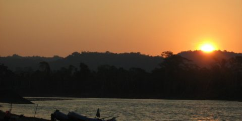
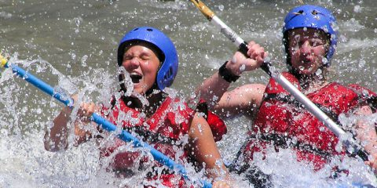

Nile River valley
The Nile River Valley runs from the Sudan Border down to Nile Delta in Cairo, into the Mediterrenean sea. It has some exciting white water depending on the section of the river being done and the time of the year.

Headwater of the Nile Jungle Rafting 8 Days
Unique jungle expedition in the tropical rainforest in one of the remotest corners of Uganda, at the Pubungu Natural Reserve, near the Nile rapids and Sudan border at the edge of the Victoria basin. This trip has all the ingredients of an epic and unforgettable journey.

HearT of the Blue Nile
The Blue River is a major tributary of the Amazon River, flowing from Ethiopian Highlands in a northwest direction through the Nyika plateau, then joining the white Nile from Uganda in Sudan to flow as the great Nile to Egypt.
| Trip Name | Duration | Difficulty | Minimum Age | Price (USD) | Highlights |
|---|---|---|---|---|---|
| Family Float Adventure | 2 Hours | Easy (Grade I-II) | 8+ | $40 | Gentle rapids and scenic views |
| Half-Day Rafting Expedition | 4 Hours | Moderate (Grade III-IV) | 12+ | $75 | Exciting rapids and riverside snacks |
| Full-Day White Water Rafting | 8 Hours | Challenging (Grade IV-V) | 15+ | $120 | Major Nile rapids and lunch included |
| Extreme Nile Challenge | 1 Day | Expert (Grade V) | 18+ | $150 | Largest rapids and maximum adrenaline |